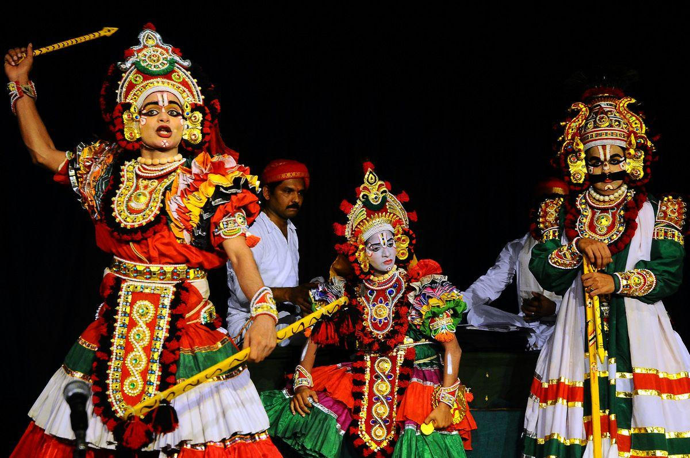
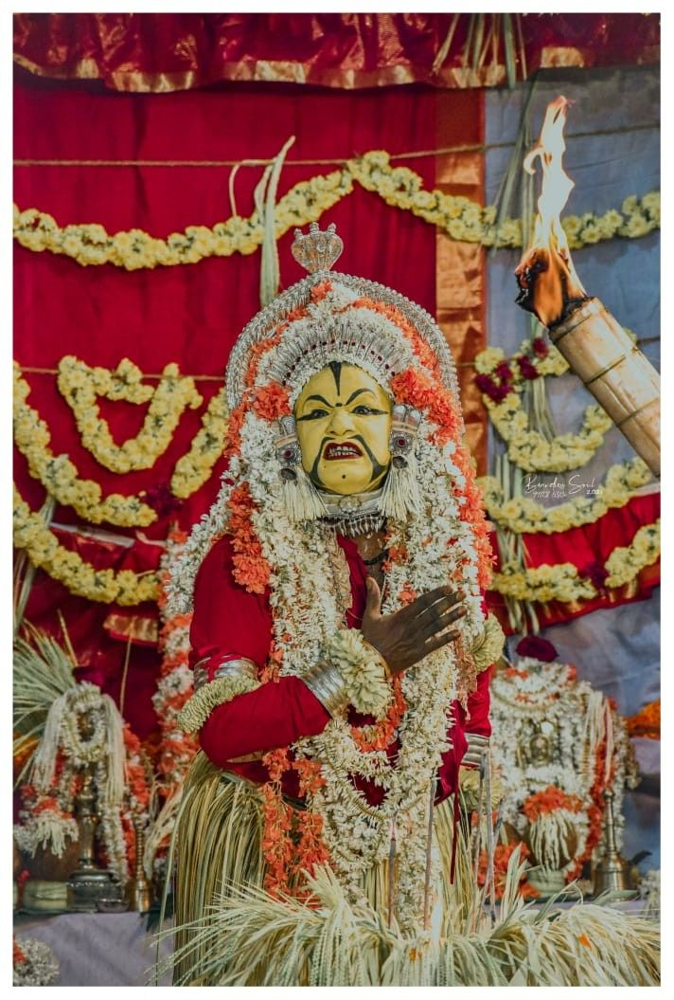

Culture of Mangalore

Yakshagana
Traditional theatre form with dance, music and elaborate costumes.

Kambala
Buffalo race in paddy fields, a thrilling annual tradition.

Bhuta Kola
Spirit worship ritual popular in Tulu Nadu region.